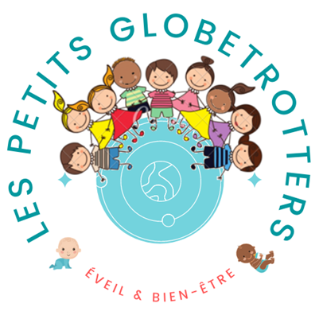

    <nav class="navbar navbar-expand-md navbar-dark fixed-top bg-dark">
        <div class="container-fluid">
          <a class="navbar-brand" routerLink="/" routerLinkActive="active" ariaCurrentWhenActive="page"> <i>Les Petits GlobeTrotters</i></a>
          <button class="navbar-toggler" type="button" data-bs-toggle="collapse" data-bs-target="#navbarCollapse" aria-controls="navbarCollapse" aria-expanded="false" aria-label="Toggle navigation">
            <span class="navbar-toggler-icon"></span>
          </button>
          <div class="collapse navbar-collapse" id="navbarCollapse">
            <ul class="navbar-nav me-auto mb-2 mb-md-0">
              <li class="nav-item">
                <a class="nav-link active" aria-current="page" routerLink="/" (click)="updateBannerByOutletIndex(0)">Micro-crèche</a>
              </li>
              <li class="nav-item">
                <a class="nav-link" routerLink="/album-component" (click)="updateBannerByOutletIndex(1)" routerLinkActive="active" ariaCurrentWhenActive="page" aria-disabled="true" >Photos</a>
              </li>            
              <li class="nav-item">
                <a class="nav-link disabled" href="/#decouvrirLink" tabindex="-1" aria-disabled="true">Préinscription</a>
              </li>
            </ul>
            <!-- <form class="d-flex">
              <input class="form-control me-2" placeholder="Mot(s) clé(s)" aria-label="Search" type="Search">
              <button class="btn btn-outline-success" type="submit">Recherche</button>
            </form> -->
          </div>
        </div>
      </nav>   